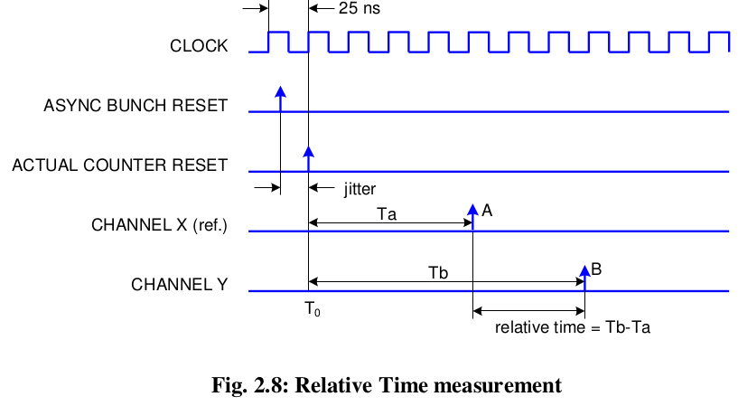

CAEN V1190
Resolution can be set at 100 ps (19 bit dynamics, 52 μs FSR), 200 ps (19 bit dynamics, 104 μs FSR) or 800 ps (17 bit dynamics, 104 μs FSR).
The data acquisition can be programmed in "EVENTS" (“TRIGGER MATCHING MODE” with a programmable time window: the so called match window) or in "CONTINUOUS STORAGE MODE".
The module accepts both ECL and LVDS inputs on the TDC inputs.
The unit accepts the following CONTROL signals (ECL differential, 110 欧) in common to all channels:
- TRG: a common TRIGGER input;
- CRST: allows the TDCs’ Bunch Count Reset;
- CLK: allows to provide an external Clock to the board;
- CLR: erases data from the Output Buffer and performs TDCs global reset;
- L2A/L2R: Level 2 Accept/Reject (2 nd level trigger, not yet implemented);
- AUX: auxiliary input (not yet implemented).
The TRIGGER can be also sent as NIM signal on a double (bridged) LEMO00 connector.
An ECL output, OUT_PROG, whose function can be programmed, is also available on the CONTROL Bus.
Six front panel LEDs show the status of the unit:
- DTACK lights up each time the module generates the VME signal DTACK;
- PWR lights up when the module is correctly supplied
- TERM ON lights up when all the lines of the CONTROL bus are terminated;
- FULL lights up when the memory is full;
- ERROR lights up when a global error in the TDCs occurs;
- DATA READY lights up when the Event/Data Ready condition occurs.
A hit measurement is performed by storing the state of the DLL (fine/vernier counter) and the coarse counter in one hit register when a hit is detected. The TDC can be programmed to detect individual leading and/or trailing edges of the hit signal, or alternatively to perform a paired measurement consisting of one leading edge and the corresponding pulse width.
Long Range Time Measurements
The V1190 allows also to increase the Full Scale Range. Taking into account relative time measurements respect to a common reference, it is necessary to use one channel as a reference and make the time difference in the software.

Each channel has a counter that rolls over every 2 N clock cycles, where N is the number of bits (19 with 100 and 200 ps resolution, 17 with 800 ps) this determines the full scale range of the time measurement. If two hits A and B are separated by the time T>FSR, when the relative time is calculated as the difference T A-B = T B - T A , the returned result is actually ($T{B}$ - $T{A}$ ) mod FSR, thus making an error of x*FSR, where x is unknown. The Extended Trigger Time Tag(ETTT) aims at the knowledge of x.
It is important to note that it is necessary to work in Trigger Matching Mode, although we usually don’t need a real trigger matching in such a long scale time measurements. The trigger is here used in order to open a sequence of consecutive trigger windows and let the TDC to record all the hits in a continuous way. To do that, the trigger will be a repetitive signal of period $T_{t}$ and the window width is programmed to be slightly wider than T t . Normally we set T t a bit less than ($2^{12}$ – 1)*25ns that is the maximum window width. The window offset is meaningless but in order to respect the constraints, it is suggested to set it equal to –WIDTH.